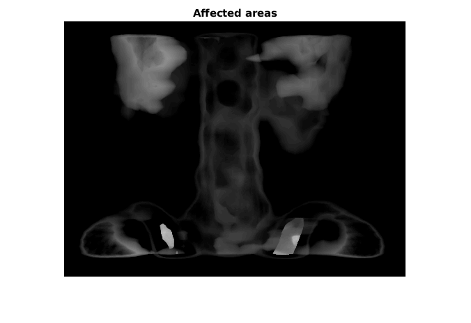
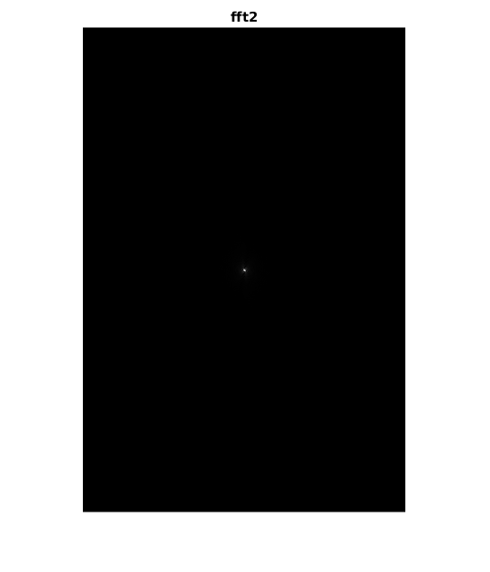
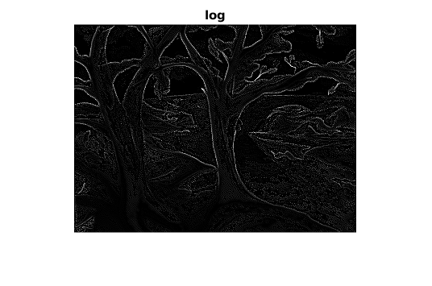
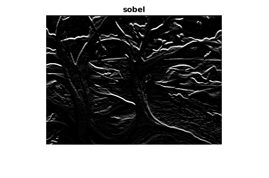
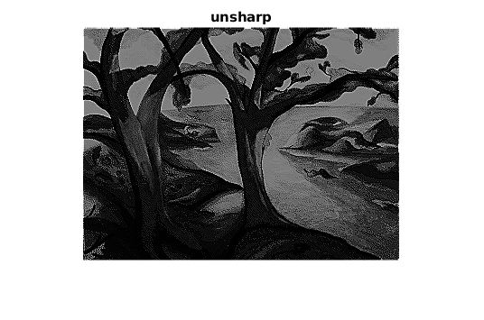
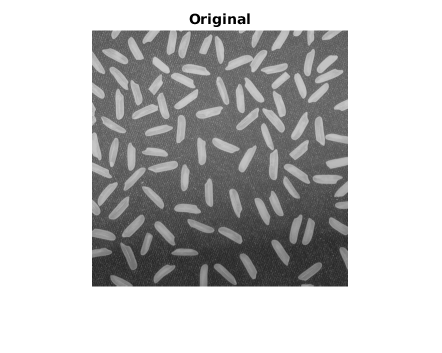
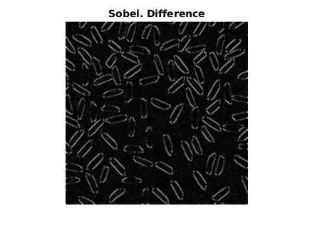
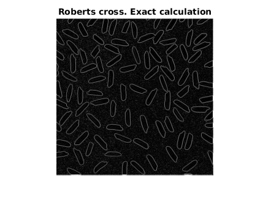
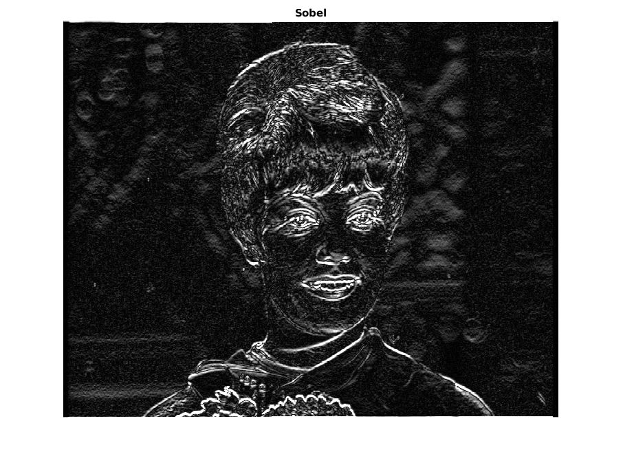

Contents
Task 1
clc; close all; clear;
I = imread('spine.tif');
figure; imshow(I); title('Original'); drawnow;
I_neg = imadjust(I, [0 1], [1 0]);
figure; imshow(I_neg); title('Negative'); drawnow;
I_sel = imadjust(I, [0.1 0.3], [0 1]);
figure; imshow(I_sel); title('Affected areas'); drawnow;

Task 2
clc; close all; clear;
I = im2double(imread('moon.tif'));
figure; imshow(im2uint8(I)); title('Original'); drawnow;
FFT2 = abs(fftshift(fft2(I)));
figure; imshow(mat2gray(FFT2)); title('fft2'); drawnow;
figure(); imshow(log(1 + FFT2), []), title('log(fft2)'); drawnow;

Task 3
clc; close all; clear;
I = imread('pout.tif');
figure; imshow(I); title('Original'); drawnow;
I_bottom = imadjust(I, [0 1], [0 127] / 255);
figure;
subplot(1, 2, 1); imshow(I_bottom);
subplot(1, 2, 2); imhist(I_bottom);
suptitle('Bottom'); drawnow;
I_top = imadjust(I, [0 1], [128 255] / 255);
figure;
subplot(1, 2, 1); imshow(I_top);
subplot(1, 2, 2); imhist(I_top);
suptitle('Top'); drawnow;
I_bottom_eq = histeq(I_bottom);
figure;
subplot(1, 2, 1); imshow(I_bottom_eq);
subplot(1, 2, 2); imhist(I_bottom_eq);
suptitle('Equalized bottom'); drawnow;
I_top_eq = histeq(I_top);
figure;
subplot(1, 2, 1); imshow(I_top_eq);
subplot(1, 2, 2); imhist(I_top_eq);
suptitle('Equalized top'); drawnow;
Task 4. Testing
clc; close all; clear;
I = imread('trees.tif');
figure; imshow(I); title('original'); drawnow;
types = {'average' 'disk' 'gaussian' 'laplacian' 'log' 'motion' 'prewitt' 'sobel' 'unsharp'};
for type = types
figure;
I_filtered = imfilter(I, fspecial(type{1}));
imshow(I_filtered);
title(type{1});
drawnow;
end

  
Task 4
clc; close all; clear;
I = imread('moon.tif');
figure; imshow(I); title('Original'); drawnow;
I_avg3x3 = imfilter(I, fspecial('average', 3)); figure; imshow(I_avg3x3); title('Average 3x3'); drawnow;
I_avg5x5 = imfilter(I, fspecial('average', 5)); figure; imshow(I_avg5x5); title('Average 5x5'); drawnow;
I_laplacian3x3 = imfilter(I_avg3x3, fspecial('laplacian', 1)); figure; imshow(imabsdiff(I_avg3x3, I_laplacian3x3)); title('Avg 3x3 - laplacian'); drawnow;
I_laplacian5x5 = imfilter(I_avg5x5, fspecial('laplacian', 1)); figure; imshow(imabsdiff(I_avg5x5, I_laplacian5x5)); title('Avg 5x5 - laplacian'); drawnow;
Task 5
clc; close all; clear;
I = im2double(imread('rice.png'));
figure; imshow(im2uint8(I)); title('Original'); drawnow;
S = fspecial('sobel');
I_sobel_x = imfilter(I, S); figure; imshow(im2uint8(I_sobel_x)) ; title('Horizontal Sobel'); drawnow;
I_sobel_y = imfilter(I, S'); figure; imshow(im2uint8(I_sobel_y)) ; title('Vertical Sobel'); drawnow;
figure; imshow(im2uint8(sqrt(I_sobel_x .^ 2 + I_sobel_y .^ 2))); title('Sobel. Exact calculation'); drawnow;
figure; imshow(im2uint8(abs(I_sobel_x) + abs(I_sobel_y))); title('Sobel. Approximate calculation'); drawnow;
figure; imshow(im2uint8(imabsdiff(abs(I_sobel_x) + abs(I_sobel_y), sqrt(I_sobel_x .^ 2 + I_sobel_y .^ 2)))); title('Sobel. Difference'); drawnow;
R_x = [1 0; 0 -1];
R_y = [0 1; -1 0];
I_rob_x = imfilter(I, R_x);
I_rob_y = imfilter(I, R_y);
figure; imshow(im2uint8(sqrt(I_rob_x .^ 2 + I_rob_y .^ 2))); title('Roberts cross. Exact calculation'); drawnow;
figure; imshow(im2uint8(abs(I_rob_x) + abs(I_rob_y))); title('Roberts cross. Approximate calculation'); drawnow;
figure; imshow(im2uint8(imabsdiff(abs(I_rob_x) + abs(I_rob_y), sqrt(I_rob_x .^ 2 + I_rob_y .^ 2)))); title('Roberts cross. Difference'); drawnow;
figure; imshow(255 - im2uint8(abs(I_rob_x) + abs(I_rob_y))); title('Negative'); drawnow;
  
Оператор Собеля выделил границы более жирно, это связано с размером
маски. Так или иначе, оба оператора успешно выделили границы.
Визуально исходное изображение выглядит привычнее, чем полученный
негатив.
Task 6
clc; close all; clear;
I = double(imread('zelda2.pgm'));
figure; imshow(uint8(I)); title('Original'); drawnow;
S = fspecial('sobel');
I_sobel_x = imfilter(I, S); figure; imshow(uint8(I_sobel_x)) ; title('Horizontal Sobel'); drawnow;
I_sobel_y = imfilter(I, S); figure; imshow(uint8(I_sobel_y)) ; title('Vertical Sobel'); drawnow;
figure; imshow(uint8(abs(I_sobel_x) + abs(I_sobel_y))); title('Sobel'); drawnow;

Task 7
clc; close all; clear;
I = imread('test.jpg');
figure; imshow(I); title('Original'); drawnow;
for i = 1:3
I_rgb_eq(:,:,i) = histeq(I(:,:,i));
end
figure; imshow(I_rgb_eq); title('Equalized RGB'); drawnow;
I_ycbcr = rgb2ycbcr(I);
for i = 1:3
I_ycbcr_eq(:,:,i) = histeq(I_ycbcr(:,:,i));
end
figure; imshow(ycbcr2rgb(I_ycbcr_eq)); title('Equalized YCbCr'); drawnow;
I_hsi = rgb2hsi(I);
for i = 1:3
I_hsi_eq(:,:,i) = histeq(I_hsi(:,:,i));
end
figure; imshow(hsi2rgb(I_hsi_eq)); title('Equalized HSI'); drawnow;
I_ycbcr_eq_y = I_ycbcr;
I_ycbcr_eq_y(:,:,1) = histeq(I_ycbcr_eq_y(:,:,1));
figure; imshow(ycbcr2rgb(I_ycbcr_eq_y)); title('Equalized only Y in YCbCr'); drawnow;
I_hsi_eq_i = I_hsi;
I_hsi_eq_is = I_hsi;
I_hsi_eq_i(:,:,3) = histeq(I_hsi_eq_i(:,:,3));
figure; imshow(hsi2rgb(I_hsi_eq_i)); title('Equalized only I in HSI'); drawnow;
I_hsi_eq_is(:,:,2) = histeq(I_hsi_eq_is(:,:,2));
I_hsi_eq_is(:,:,3) = histeq(I_hsi_eq_is(:,:,3));
figure; imshow(hsi2rgb(I_hsi_eq_is)); title('Equalized I and S in HSI'); drawnow;

Наиболее реалистичными выглядят изображения при эквализации только канала I в HSI и канала Y в YCbCr. При эквализации каналов I и S в HSI картинка
выглядит очень сочно, но, к сожалению, менее правдоподобно. При полной эквализации YCbCr и HSI получились несколько сюрреалистичные изображения.
Результаты подобной обработки могут отличаться от изображения к изображению и наилучший эффект может достигаться при совершенно разных преобразованиях.